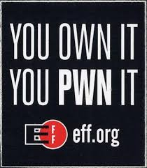
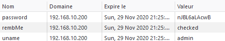

NAS D-Link, cookies et mots de passe chiffrés
J’ai récemment mis la main sur un NAS D-Link, le DNS-325. Considéré comme « en fin de vie mais toujours supporté » mon premier réflexe a donc était de le mettre à jour.
Dernière MAJ disponible: fin 2013. Me voilà donc avec uniquement la v1 du SMB, pas de telnet ni de ssh. La seule interaction possible étant la webapp, on part de loin.
Voulant tester certaines idées d’interconnexions entre nagios et des équipements de mon réseau, dont le NAS, il me fallait un accès plus traditionnel sur la machine. C’est là que tout a commencé.
Fun_Plug
Les firmwares de certains NAS permettent l’exécution au boot d’un script nommé Fun_Plug. Contrairement aux autres fichiers systèmes ce dernier doit se situer sur le Volume_1 du disque dur et est donc accessible à l’utilisateur, lui permettant d’exécuter des commandes au démarrage du NAS.

C’est à ce moment qu’intervient Fonz, le développeur berlinois publie FFP ou Fonz Fun_Plug. Script qui permet de se servir de cette fonctionnalité afin de pimper le NAS avec quelques daemons bien pratiques tel que telnet, SSH ou encore rsync.
Au passage nous récupérons aussi l’accès root tant convoité…
L’interface démoniaque
Depuis le premier jour l’interface de connexion m’interpelle.
Il faut savoir que je n’enregistre pas les mots de passes de mon homelab dans mon navigateur mais que j’utilise les fonctions « se souvenir de moi » afin de rester connecter.
Sans même parler de son comportement étrange, l’autocomplétion du champ mot de passe m’intriguait donc.
Cookies
Afin de comprendre l’autocomplétion il faut faire un tour du côté des cookies, voici ce qu’on y trouve:

L’application pose donc 3 cookies:
- password: Stock une valeur qui semble chiffrée
- uname: Le nom d’utilisateur entré, qu'il soit valide ou non.
- rembMe: Si la case remember me est cochée. Dans le cas contraire alors les cookies uname et password sont supprimés.
Vous avez dit chiffré ?
Le cookie password avait titillé ma curiosité et j’étais rendu root de la machine, mon setup de nagios pouvait attendre, il fallait que j’aille voir ce qui se passe du côté de la webapp…
Si nous regardons de plus près /var/www/web et son login.html, nous y retrouvons nos cookies précédents:
// set password
var cUName = $.cookie('uname');
var cPwd = $.cookie('password');
Ici l’app récupère nos cookies pour l’autocomplétion, mais ce qui m’intéresse c’est le pseudo-chiffrement effectué.
// Save checkbox, userName, password by cookie
$.cookie("rembMe", "checked", { expires: 365 ,path: '/' });
$.cookie('uname', uName, { expires: 365 ,path: '/'});
$.cookie('password', encRC4(uName, pwd), { expires: 365 ,path: '/'});
Là ça devient intéressant, notre pass est donc chiffré par la fonction encRC4() qui prend comme argument notre nom d’utilisateur et notre mot de passe.
Aussi, qui dit chiffrement, qui déchiffrement:
$("#pre_pwd").click(function(){
var cPwd = $.cookie('password');
if (cPwd != '' && cPwd != null) {
$("#pre_pwd").val(decRC4($.cookie('uname'), $.cookie('password')));
cPwd_tmp = cPwd;
for (i=0;i<16-cPwd.length;i++)
cPwd_tmp = cPwd_tmp + "*";
//alert(cPwd.length);
//alert(cPwd_tmp);
$("#pre_pwd").val(cPwd_tmp);
}
});
Voilà qui explique la danse du formulaire, on peut remarquer que c’est à ce moment que le pass est déchiffré du cookie, avec la fonction decRC4()
Maintenant que nous avons une idée globale allons voir plus en detail le javascript. Qui a-t-il donc dans function/rc4.js ?
Tout d’abord la base de leur chiffrement:
function rc4(key, text) {
var i, x, y, t, x2, kl=key.length;
s=[];
for (i=0; i<256; i++) s[i]=i
y=0
x=kl; while(x--) {
y=(key.charCodeAt(x) + s[x] + y) % 256
t=s[x]; s[x]=s[y]; s[y]=t
}
x=0; y=0;
var z=""
for (x=0; x<text.length; x++) {
x2=x & 255
y=( s[x2] + y) & 255
t=s[x2]; s[x2]=s[y]; s[y]=t
z+= String.fromCharCode((text.charCodeAt(x) ^ s[(s[x2] + s[y]) % 256]))
}
return z
}
Une adaptation de crypt::rc4, cohabitant avec de quoi faire des aller-retours en base64:
var tab = "ABCDEFGHIJKLMNOPQRSTUVWXYZabcdefghijklmnopqrstuvwxyz0123456789+/"
function textToBase64(t) {
var r=''; var m=0; var a=0; var tl=t.length-1; var c
for(n=0; n<=tl; n++) {
c=t.charCodeAt(n)
r+=tab.charAt((c << m | a) & 63)
a = c >> (6-m)
m+=2
if(m==6 || n==tl) {
r+=tab.charAt(a)
// if((n%45)==44) {r+="\n"}
m=0
a=0
}
}
return r
}
function base64ToText(t) {
var r=''; var m=0; var a=0; var c
for(n=0; n<t.length; n++) {
c=tab.indexOf(t.charAt(n))
if(c >= 0) {
if(m) {
r+=String.fromCharCode((c << (8-m))&255 | a)
}
a = c >> m
m+=2
if(m==8) { m=0 }
}
}
return r
}
Mélangez un peu:
function encRC4(uName, pwd){
return textToBase64(rc4(uName, pwd));
}
function decRC4(uName, pwd){
return rc4(uName,base64ToText(pwd));
}
Et… c’est tout. Tout le système de chiffrement tient là.
Grace à la fonction decRC4, qui permet de repasser en clair le mot de passe contenu dans notre cookie, il n’y a même pas d’effort à faire et on crée un outil de déchiffrement .
Il suffit alors de rentrer les informations contenues dans les cookies, le login ainsi que le mot de passe chiffré et le script nous retourne le mot de passe en clair.
On ne sait jamais, si besoin est de retrouver un mot de passe…